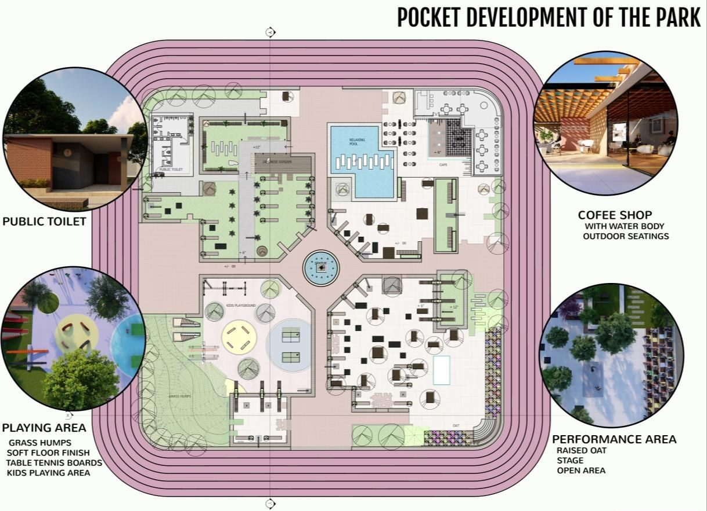

Work · Public space
Shahid Lakhan Park renovation, Dang
A renovation plan for a public park, based on consultation with the people who use it.

AssignmentDetailed project report
LocationDang
Period2019
RoleDesign consultant
ValueNPR 2.5 million (US$ 16,500)
The park needed better facilities for nearby residents while keeping its trees and open space.
We reviewed the existing master plan and consulted residents, park users and the municipality. Environmental screening came next. The new plan organises the park into activity pockets, among them a play area, a performance space, a café beside a water feature and new public toilets, joined by an accessible loop.
Improved access, lighting and amenities sit alongside the existing trees and lawns.
What we did
- Existing master plan review
- Site survey and assessment
- Stakeholder consultation
- Environmental screening and assessment
- Park, amenity and lighting design
- Accessibility planning
- Cost estimate, BOQ, specifications and tender documents
Contact
work
with us.
Tell us about the project you have in mind. We reply within two working days.